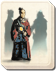
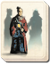

Requires
- Arts:

Enables
- Arts:
 

Effects
- 7% reduction to administration costs
- +10% to wealth generated by farms across all provinces
Description
In life's autumn years
Man is brave and wise; in spring
brave and foolhardy.
The man who counts sacks of rice for his lord does a great service. Of greater service yet is the man who organises the life of a village, a town or a province, making sure that each has an appointed task, and each receives a just reward for his labours. When his work is perfect, no one knows that he has had a hand in any achievement.